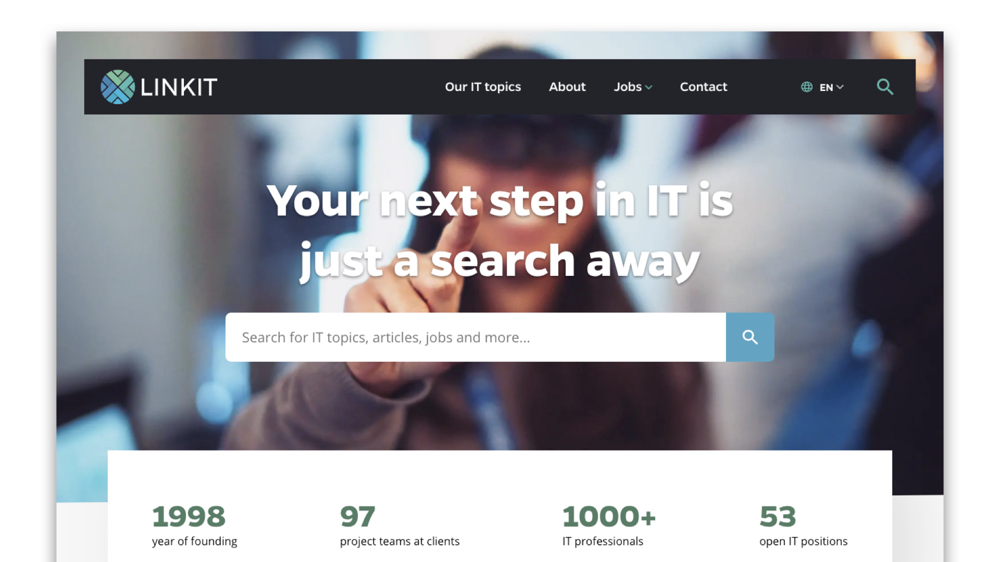

Linkit
Linkit is an established name in the IT-world, connecting the ever growing supply and demand for IT-knowledge for the past 20 years. Innovation is a keyword in IT and Linkit knows this - which is why a new website was designed and built in 2020.
Finding, not searching
Because of Linkit's vast experience in a complex world, they have a lot of knowledge they want to convey through the website. To make this manageable both for Linkit and the user, the website was centered around the most important interaction: searching. Or rather, finding.
The website places the user's focus on the search bar when it is activated. Mixed suggestions below the search bar help the user ahead in finding interesting topics they might be looking for. Several color coded tags make a clear distinction between the different content types on the Linkit website.
Collaboration
The website was also optimized for mobile use. After I worked on Linkit's visual and interaction design on both desktop and mobile, the website was built in an Agile collaboration between Linkit and Connect Holland.

Result
The website is online and can be viewed on linkit.nl.